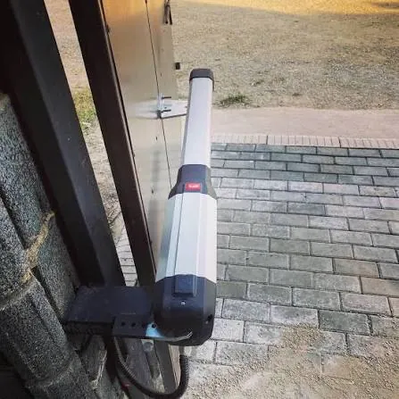
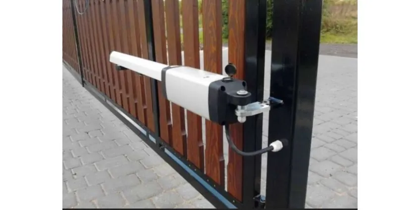
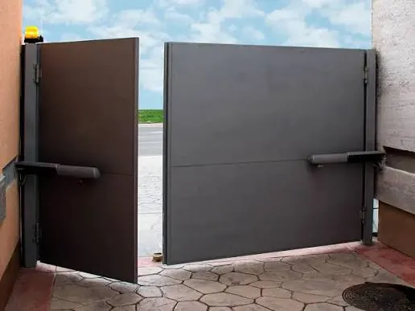
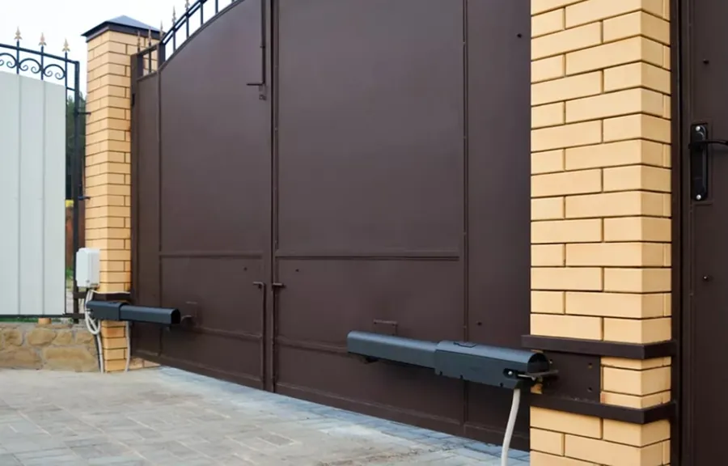
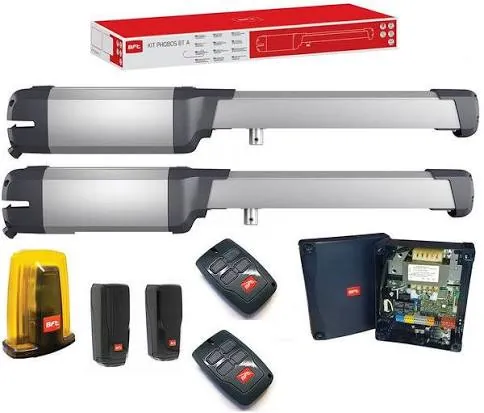
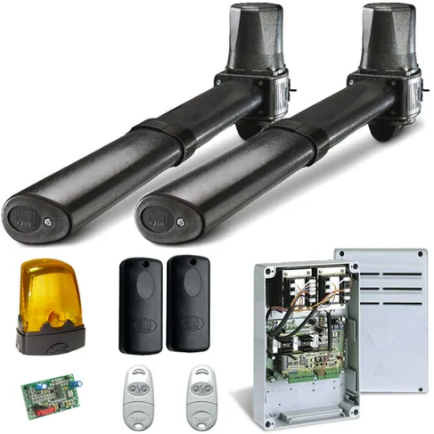
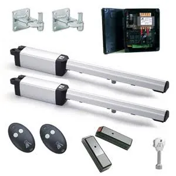

Автоматика для распашных воротАшылмалы қақпа автоматикасыAutomation for swing gates
Монтаж, срочный ремонт и обслуживание линейных и рычажных приводов распашных ворот CAME, BFT, DoorHan, NICE, Alutech и других марок в Алматы и области.Алматы мен облыста CAME, BFT, DoorHan, NICE, Alutech және басқа маркалардың ашылмалы қақпаларының сызықтық және иінтіректі жетектерін орнату, шұғыл жөндеу және қызмет көрсету.Installation, urgent repair and servicing of linear and arm operators for swing gates by CAME, BFT, DoorHan, NICE, Alutech and other brands in Almaty and the region.







Работы и услугиЖұмыстар мен қызметтерWorks and services
МонтажОрнатуInstallation
Подбор привода по массе и ширине створки, монтаж, настройка, программирование пультов.Жақтаудың салмағы мен еніне қарай жетек таңдау, орнату, баптау, пульттерді бағдарламалау.Choosing an operator by leaf weight and width, installation, setup, remote programming.
РемонтЖөндеуRepair
Срочный ремонт и диагностика: плата управления, двигатель, концевые выключатели, фотоэлементы.Шұғыл жөндеу және диагностика: басқару тақшасы, қозғалтқыш, шеткі ажыратқыштар, фотоэлементтер.Urgent repair and diagnostics: control board, motor, limit switches, photocells.
ОбслуживаниеҚызмет көрсетуMaintenance
Смазка, регулировка, проверка усилия и ручной разблокировки.Майлау, реттеу, күшті және қолмен ашуды тексеру.Lubrication, adjustment, force and manual release checks.
КомплектующиеҚосалқы бөлшектерSpare parts
Платы управления, приёмники, пульты, фотоэлементы, сигнальные лампы.Басқару тақшалары, қабылдағыштар, пульттер, фотоэлементтер, белгі шамдары.Control boards, receivers, remotes, photocells, warning lights.
Bluetooth-модуль ZMKZMK Bluetooth-модуліZMK Bluetooth module
Открытие ворот с телефона без интернета и SIM-карты.Қақпаны телефоннан интернетсіз және SIM-картасыз ашу.Open the gates from a phone without internet or a SIM card.
ПультыПульттерRemotes
Дубликаты и программирование пультов. Подробнее о пультахПульт көшірмелері және бағдарламалау. Пульттер туралы толығырақRemote duplicates and programming. More about remotes
Работаем с оборудованием CAME, BFT, NICE, DoorHan, FAAC, Alutech, An-Motors, Hormann, Baisheng и других марок.CAME, BFT, NICE, DoorHan, FAAC, Alutech, An-Motors, Hormann, Baisheng және басқа маркалардың жабдығымен жұмыс істейміз.We work with CAME, BFT, NICE, DoorHan, FAAC, Alutech, An-Motors, Hormann, Baisheng and other brands.
Типичные неисправностиЖиі кездесетін ақауларCommon faults
Отметьте, что случилось, и нажмите WhatsApp: отмеченное попадёт в сообщение.Не болғанын белгілеп, WhatsApp басыңыз: белгіленгені хабарламаға қосылады.Tick what happened and press WhatsApp: your choice goes into the message.
Другие воротаБасқа қақпаларOther gates
Часто задаваемые вопросыЖиі қойылатын сұрақтарFrequently asked questions
Какой привод выбрать: линейный или рычажный?Қай жетекті таңдау керек: сызықтық па, иінтіректі ме?Linear or arm operator?
Линейный подходит для большинства ворот со столбами нормальной ширины. Рычажный ставят на широкие столбы и при открывании наружу. Пришлите фото ворот и размеры, мы подберём привод.Сызықтық жетек қалыпты ендегі бағандары бар қақпалардың көбіне сай келеді. Иінтіректі жетекті кең бағандарға және сыртқа ашылғанда орнатады. Қақпаның фотосы мен өлшемдерін жіберіңіз, жетекті таңдап береміз.A linear operator suits most gates with normal posts. Arm operators are used on wide posts and for outward opening. Send a photo and dimensions and we will choose an operator.
Как открыть распашные ворота без электричества?Ашылмалы қақпаны электрсіз қалай ашуға болады?How to open swing gates without power?
Ключом ручной разблокировки на каждом приводе: после разблокировки створки открываются рукой.Әр жетектегі қолмен ашу кілтімен: босатқаннан кейін жақтаулар қолмен ашылады.Use the manual release key on each operator: once released, the leaves open by hand.
Оставьте заявкуӨтінім қалдырыңызSend a request
Опишите задачу и по возможности приложите фотографию оборудования. Специалист ответит и подготовит предложение.Міндетті сипаттап, мүмкіндігінше жабдықтың фотосуретін қоса жіберіңіз. Маман жауап беріп, ұсыныс дайындайды.Describe your task and, if possible, attach a photo of the equipment. A specialist will reply with an offer.
Монтаж и ремонт — Алматы и Алматинская область. Доставка по всему Казахстану.Орнату және жөндеу — Алматы және Алматы облысы. Бүкіл Қазақстан бойынша жеткізу.Installation and repair in Almaty and Almaty Region. Delivery across Kazakhstan.
АлександрАлександрAlexander · +7 707 266 91 54 (WhatsApp) · Telegram @Zmk_kz · zmkalexandr@gmail.com